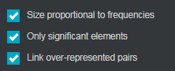
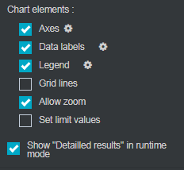

Conduct a Correspondence Factorial analysis
Correspondence Factorial Analysis: This is a simplification of multidimensional data by extracting factors that summarize the initial information provided by nominal variables by placing the observations in relation to this information.
EXAMPLE:
- In the surveys, the respondents’ behaviors and identities are described by modalities that characterize them. The multiple correspondence factorial analysis helps identify profiles and highlight the remarkable associations by synthesizing the data according to their affinities.
- The Lexical analysis makes it possible to associate with each answer to the open survey questions or to each fragment of the analyzed corpus the list of the significant (or the most frequent) words that compose them. The factorial analysis then makes it possible to highlight the most frequently associated terms by defining factors corresponding to these "constellations". We can summarize the variety of situations or linguistic forms by profiles that differentiate respondents or themes mentioned in the analyzed text.
In order to perform Correspondence Factorial Analysis (CFA), proceed as follows:
-
Click on the
 button.
button. -
Select Advanced analysis.
-
Click on Correspondence Factorial Analysis.
-
Drag and drop the variables in rows and columns from the list of available variables.

Once the CFA is created, it is possible to change the variables by selecting the analysis and clicking  or by right clicking edit on the analysis.
or by right clicking edit on the analysis.
In the options tab, calculation category, three specific options to the map appear.

-
Size proportional to frequencies: allows to assign to each bubble a size according to the represented modality size.
-
Only significant elements: allows to display on the map only the most significant modalities (according to the tests in force), the others do not appear in order to make the reading more synthetic.
-
Link over-represented pairs: allows to display on the map the over-represented modalities couples by linking them.
In the case of a CFA, there can be many variables, which can make the chart difficult to read. You can then zoom in on certain sections to see more closely an interesting area during the preview.
To zoom, select allow zoom in the chart elements

In the preview, place the cursor on a part of the graph, click drag and make a square around the area to be zoomed. Then it will be possible to cancel the zoom by clicking on the button .
Three map productions are useful for understanding the displayed results:
-
The correspondence map on the first two components
-
The variable contributions to the factorial axis
-
The percentage of variance explained by the factorial axis
It is possible to display additional information regarding the modalities of the analysis (the contributions, the coordinates and the modalities squared cosines) by selecting detailed results below the map. These can be exported to Excel by clicking on the button .

The statistical results can be displayed during the preview by selecting show "Detailed results" in runtime mode in the chart elements.

Reading the correspondence map:
Away from the map are so-called "original" modalities, such as service employee, gastronomy or rafting / swim. In the center of the map are the so-called "no surprises" modalities such as liberal professions /executives, retired, lazing and walking. This means that liberal profession / executives and activities practicing by retired are close to those of the population interviewed and that lazing and walking reflect the weight of each SPC of the sample.
When two modalities are close to each other, this indicates an attraction. This means that the count responding the following two conditions are more numerous than the count that would have resulted from a proportional distribution. In the above example, individuals who are "retired" have also chosen the "walking" activity.
When two modalities are distant from each other, this indicates repulsion. In the example above, the individuals who are "service employee” did not choose the "rafting /swim" activity.
The modalities’ contribution to factorial axis:
The weights of each modality on the axis make it possible to understand the map ‘reading.
In the example above, axis 1 weighs 36.9% and axis 2 for 20.3%. Axis 1 makes it possible to understand the map.
On the right, there are some rather expensive activities practiced by high-income SPC, such as gastronomy, tennis or visits. On the left, it is rather free activities, such as swimming, hiking or lazing practiced by low income SPC.
The explained variance’ percentage:
On each axis of the map are the percentages of the link connecting the data, this corresponds to the sum of the attractions-repulsions. The greater the sum of the axis’ percentages, the more the map represents reality. For the CFA from the threshold of 50% the restitution is of good quality.
In the example above, the axis 1 weighs for 36,9% and the axis 2 for 20, 3%, so the map restores 57,2% of the information, it is therefore a good representation.